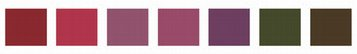

自製酸鹼指示劑 重點整理五年級自然｜第三單元 水溶液 課本 74–75、80 頁
⭐ 必會 3 句
- 紫色高麗菜汁遇到酸性水溶液偏紅色，遇到中性偏紫色，遇到鹼性偏藍色或綠色。
- 紫色高麗菜、紅鳳菜、蝶豆花含有花青素，遇到酸性或鹼性水溶液，顏色會產生變化。
- 植物汁液遇到酸鹼的顏色變化有規律，就可以當作酸鹼指示劑。
🔬 科學探究的步驟（課本 74 頁）
1
觀察
紫色高麗菜沙拉加醋，發現紫色高麗菜會變色
→
2
提問
顏色變化能不能用來辨認醋或其他調味料的酸鹼性？
→
3
蒐集資料
上網查「植物汁液變色」：紫色高麗菜、紅鳳菜、蝶豆花含有花青素
→
4
假設
做實驗之前先猜：植物汁液遇到酸鹼，會有規律的顏色變化
→
5
實驗
把紫色高麗菜汁滴進不同酸鹼的水溶液，觀察顏色
→
6
結論
看了結果之後說：顏色變化不同，但都有規律，可以當酸鹼指示劑
🥬 紫色高麗菜汁的做法（課本 74 頁）：① 把紫色高麗菜剝成小碎片 → ② 小碎片泡在熱的純水裡約 10 分鐘 → ③ 過濾汁液。
過濾去掉的是菜渣；花青素是水溶性色素，會溶在水中，留在汁液裡。
過濾去掉的是菜渣；花青素是水溶性色素，會溶在水中，留在汁液裡。
⚠️ 熱水只由老師處理；高麗菜汁雖然是用食物做的，實驗用的東西一律不嘗。這個實驗由老師在課堂示範，回家不用做。
🎨 紫色高麗菜汁的顏色表（課本 75 頁）
| 酸鹼性 | 滴入紫色高麗菜汁後 | 例子（石蕊試紙測過） |
|---|---|---|
| 酸性 | 偏紅色 | 醋、檸檬酸水 |
| 中性 | 偏紫色 | 食鹽水、糖水 |
| 鹼性 | 偏藍色或綠色 | 小蘇打水（偏藍綠）、肥皂水（偏綠） |
💡 紫色高麗菜汁：偏紅色＝酸性，偏紫色＝中性，偏藍色或綠色＝鹼性。
💡 小蘇打水偏藍綠、肥皂水偏綠，顏色不太一樣，但都是鹼性。
💡 小蘇打水偏藍綠、肥皂水偏綠，顏色不太一樣，但都是鹼性。
🔍 先用已經知道酸鹼性的水溶液找出顏色的規律，再拿去判斷不知道的水溶液。色塊只是示意，真正的顏色請看課本 75 頁的照片。
🌿 其他植物汁液（課本 80 頁）
| 植物汁液 | 從酸性（左）到鹼性（右）的顏色 |
|---|---|
紫色高麗菜汁 偏紅 → 偏紫 → 偏藍或綠 | |
紅鳳菜汁 和紫色高麗菜汁不一樣，但有規律 | |
蝶豆花花瓣汁 偏紫紅 → 藍色 → 偏藍綠到綠（課本 62 頁） | |
火龍果果皮汁 顏色變化也不一樣，但有規律 | |
葡萄果皮汁 顏色變化也不一樣，但有規律 |  |
💡 p.80 的這幾種植物汁液，遇到酸鹼的顏色變化不一樣，但都有規律，所以都能當酸鹼指示劑；看不出顏色變化的汁液，不適合當酸鹼指示劑。
例如白蘿蔔汁沒有顏色，滴進酸性或鹼性水溶液都看不出變化，不適合。不同汁液滴進同一杯，顏色不一樣，不是汁液壞了。
📏 用 pH 值表示酸鹼（課本 80 頁）
💡 pH 值小於 7 是酸性，等於 7 是中性，大於 7 是鹼性。
| 酸鹼性 | 課本 80 頁的例子（pH 值） |
|---|---|
| 酸性 小於 7 | 鹽酸 約 1、檸檬 約 2、可樂 約 2.5、食用醋 約 3、蘋果汁 約 3.5、酸雨 約 4.5 |
| 中性 等於 7 | 純水 7 |
| 鹼性 大於 7 | 小蘇打溶液 約 8.5、漂白水 約 11.5、飽和石灰水 約 12.5 |
🥤 甜甜的可樂、蘋果汁，pH 值都小於 7，是酸性。鹽酸、漂白水很危險，只看數線，不拿來做實驗。
⚠️ 容易搞混的地方
- ❌「紫色高麗菜汁的顏色是葉綠素造成的」→ 不對！是花青素（水溶性色素）。
- ❌「過濾是為了把花青素去掉」→ 不對！過濾去掉的是菜渣，花青素留在汁液裡。
- ❌「小蘇打水偏藍綠、肥皂水偏綠，顏色不完全一樣，所以酸鹼性不同」→ 不對！兩杯都是鹼性。
- ❌「甜的飲料都是中性」→ 不對！可樂、蘋果汁是酸性。
🎯 想多練習
自由練習，不是作業；用眼 30 分鐘要休息 10 分鐘。
打開 第二次評量線上題庫 →「📚 主題練習」→ 選「自製酸鹼指示劑」（課本 74–75、80）。
「素養題組」裡的〈小芸的蝶豆花實驗〉〈小翔整理的 pH 值〉，也是這一課的內容。
打開 第二次評量線上題庫 →「📚 主題練習」→ 選「自製酸鹼指示劑」（課本 74–75、80）。
「素養題組」裡的〈小芸的蝶豆花實驗〉〈小翔整理的 pH 值〉，也是這一課的內容。